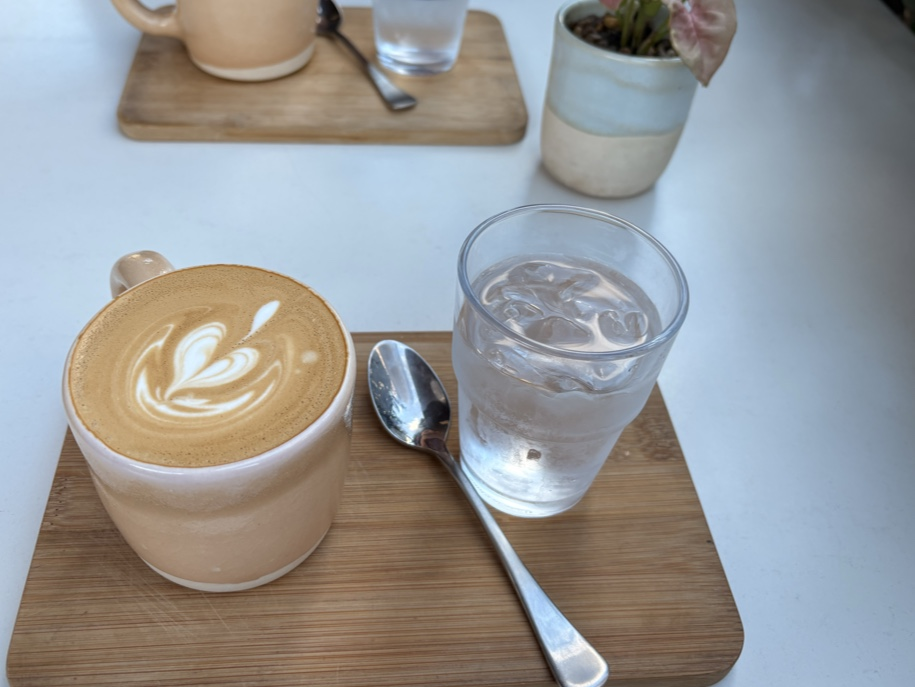

A tucked-away specialty cafe with seriously good coffee, fresh brunch and warm welcomes — the kind of quiet local you tell your friends about. Dogs always welcome.
It's in the name. Regulars — and more than a few visitors from Melbourne — reckon it's some of the best coffee they've had. However you take yours, it's poured with care and finished with beautiful latte art.

"Easily one of the best coffees you'll get in Sydney. Staff are so welcoming and friendly. You can't go wrong food wise — shout out to the pesto scramble — and the banana bread is a must."
"The iced coconut long black was absolutely amazing — one of the best coffees I've ever had. So refreshing and full of flavour. A cosy atmosphere too."
"Pet-friendly, easy to walk to, and the owner is really friendly. Loved the croissant — super fresh and buttery. Cold brew was smooth and the latte art beautiful."
"Food is amazing and so fresh! Staff make you feel so welcome. Off the main street, a quiet, nice spot — and dog-friendly seating outside is a huge bonus."
Just off the main street. Open early on weekdays for the coffee run, and a relaxed weekend pace. Walk-ins welcome — and so are the dogs.